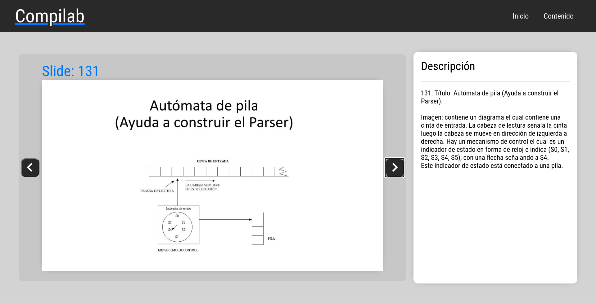

¡Bienvenido a Compilab! Está página esta diseñada para que puedas útilzar tu lector de pantalla junto al movimiento del teclado de una manera más fácil.
Instrucciones:
1) Puedes acceder al contenido moviendote con la tecla tabulador hasta llegar a la opción "Contenido".
2) En contenido moviendote con la tecla tabulador vas a encontrar las diapositivas emnumeradas más el título correspondiente. Pulsa enter para acceder.
3) En la herramienta donde se presentan las diapositivas vas a encontrar varios elementos:
- Un tab te lleva a "Descripción": Esto indica que con el siguiente tab te úbicaras en la descripción
- Tres tab te lleva a "Siguiente": Avanzar en las presentaciones. Puedes usar la tecla "Flecha derecha" del teclado como atajo.
- Cuatro tab te lleva a "Anterior": Retroceder en las presentaciones. Puedes usar la tecla "Flecha izquierda" del teclado como atajo.